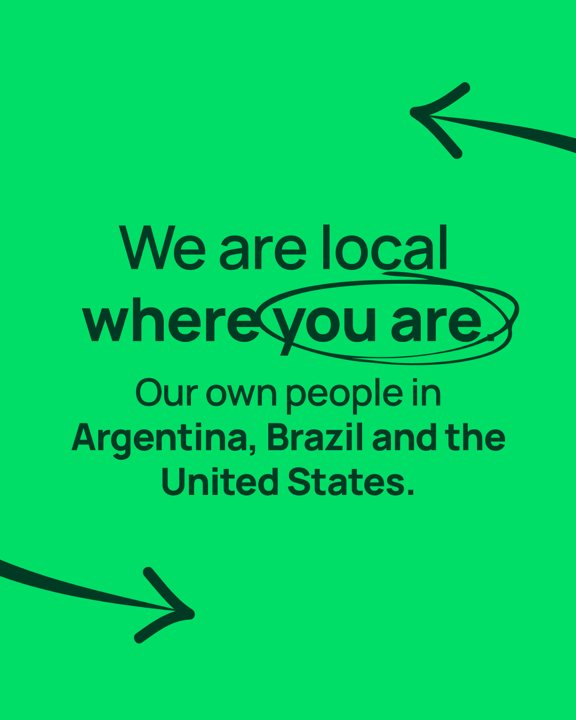
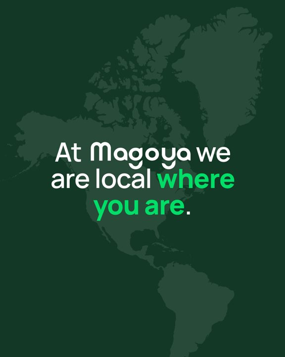
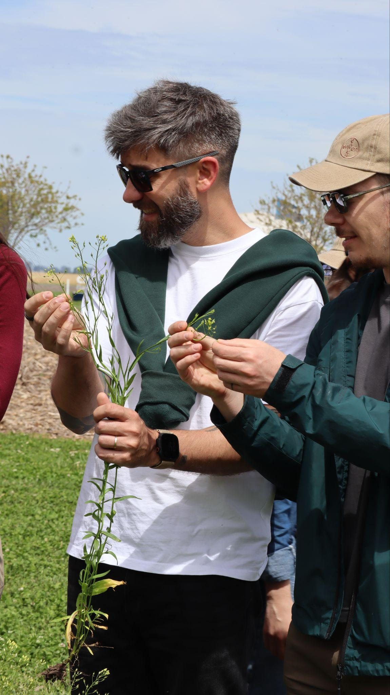
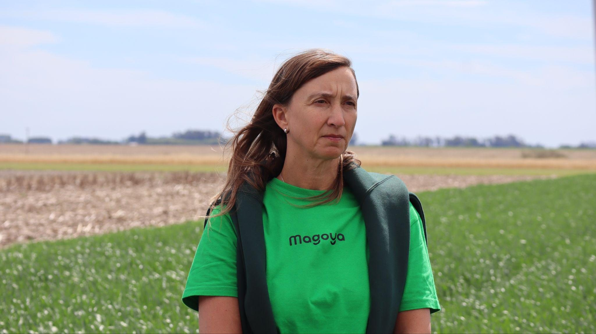
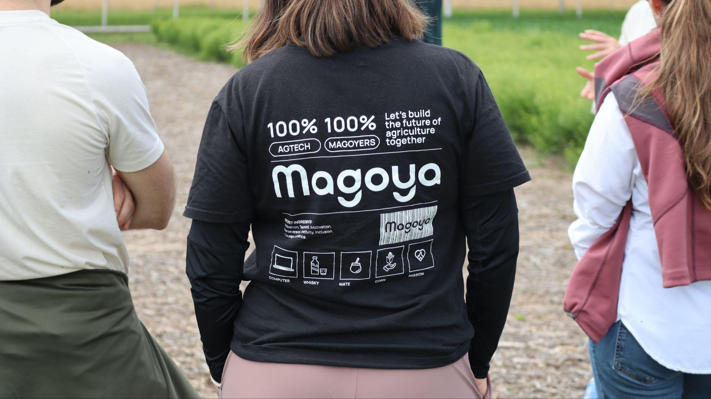
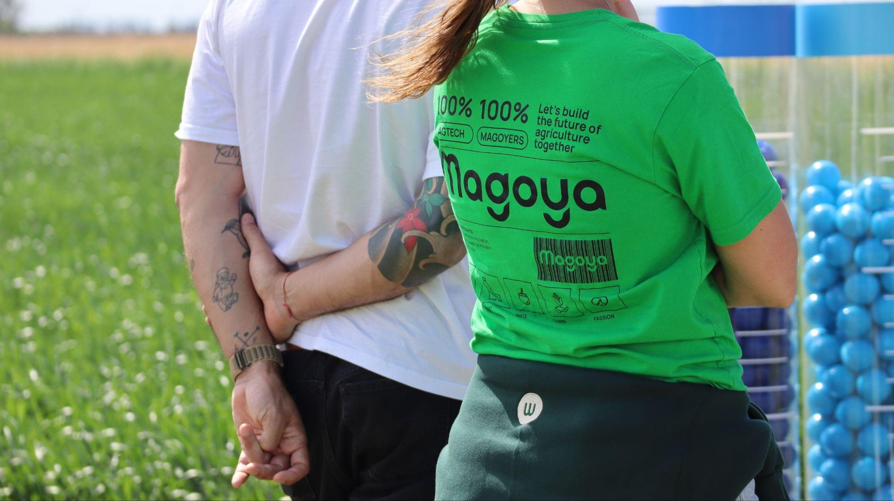
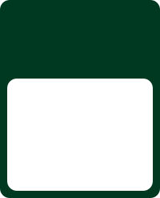

Logo & avataresLogo and avatars
El wordmark redondeado es la firma. Los avatares — extraídos de las letras del wordmark — son el sistema de identidad secundario para redes, favicons y aplicaciones chicas.
The rounded wordmark is our signature. The avatars come from the letters of the wordmark and make up the secondary identity system for social media, favicons, and small applications.

Principal · verde digital #00DE68 sobre blancoPrimary · Digital Green #00DE68 on white

Institucional · crema sobre Verde Magoya #133825Institutional · cream on Magoya Green #133825

Neutra · negro #161616 sobre blancoNeutral · black #161616 on white

Cálida · verde profundo sobre Crema #ECE3DBWarm · Magoya Green on Magoya Cream #ECE3DB
AvataresAvatars
Siempre círculo verde digital #00DE68 con marca blanca. La cara es el avatar de personalidad (redes sociales, comunidad); la m es el monograma funcional (favicon, app icon). No inventar avatares nuevos ni cambiar los colores.
Always a Digital Green #00DE68 circle with a white mark. The face is the personality avatar (social media, community). The m is the functional monogram (favicon, app icon). Don’t create new avatars or change their colors.
Reglas & especificacionesRules and specs
- Aire mínimo alrededor del wordmark: la altura de la “m” en todos los lados.Minimum clear space around the wordmark: the height of the “m” on every side.
- Tamaño mínimo: 90px de ancho en pantalla · 24mm en impreso. Menos que eso → usar el avatar “m”.Minimum size: 90px wide on screen · 24mm in print. Any smaller → use the “m” avatar.
- Sobre foto: wordmark crema o blanco, siempre con overlay verde profundo.On a photo: cream or white wordmark, always with a Magoya Green overlay.
- Colores permitidos del wordmark: verde digital, negro, crema, verde profundo, blanco.Approved wordmark colors: Digital Green, black, cream, Magoya Green, and white.
- No estirar, rotar, inclinar, agregar sombras, contornos ni degradados.Stretching, rotating, or skewing it, or adding shadows, outlines, or gradients.
- No usar el wordmark en lima #A2FF00 — el lima es energía, no identidad.The wordmark in Energy Lime #A2FF00. Lime is energy, and the wordmark is identity.
- No recolorear los avatares ni ponerlos sobre fondos que compitan (lima sobre verde digital, etc.).Recoloring the avatars or placing them on competing backgrounds (lime on Digital Green, for example).
- No reconstruir el wordmark con otra tipografía ni alterar el espaciado entre letras.Rebuilding the wordmark in another typeface or changing its letter spacing.
El negro construye.
El verde hace crecer.Black builds.
Green grows.
Tres verdes con roles distintos y neutros cálidos. El Verde Magoya #133825 es el verde protagonista de Magoya. Para resaltar una frase en un titular sobre fondo oscuro se usa el Verde digital #00DE68. El lima #A2FF00 ahora también es uno de los colores de IA en Campo, así que en Magoya ocupa poca superficie: solo acentos, detalles o CTA. Nunca una pieza 100% negra ni 100% verde.
Three greens with different roles, plus warm neutrals. Magoya Green #133825 is our lead green. To highlight a phrase in a headline on a dark background, use Digital Green #00DE68. Energy Lime #A2FF00 is now also one of the IA en Campo colors, so at Magoya it covers very little surface: accents, details, or CTAs only. A piece is never 100% black or 100% green.
Proporción de usoProportion of use
Es el verde protagonista de Magoya: se potencia su uso y ocupa la mayor superficie.
Magoya’s lead green. Use it generously: it covers the most surface.
Mucha menos proporción: solo acentos, detalles o CTA.
A much smaller share: accents, details, or CTAs only.
El ancho de cada bloque muestra la relación entre los dos colores, no un porcentaje. Los porcentajes exactos todavía no están definidos.
The width of each block shows how the two colors relate to each other. It isn’t a percentage: exact percentages are still to be defined.
Valores para producciónProduction values
| Color | HEX | RGB | CMYK (orientativo)CMYK (approximate) | Pantone (aprox.)Pantone (closest match) | RolRole |
|---|---|---|---|---|---|
| Verde MagoyaMagoya Green | #133825 | 19 · 56 · 37 | 77 · 39 · 74 · 63 | PMS 553 | Verde protagonistaLead green |
| Verde digitalDigital Green | #00DE68 | 0 · 222 · 104 | 71 · 0 · 77 · 0 | PMS 3282 | Identidad / logo / resaltar en titulares sobre oscuroIdentity, logo, and headline highlights on dark |
| Lima energíaEnergy Lime | #A2FF00 | 162 · 255 · 0 | 43 · 0 · 100 · 0 | PMS 382 2X | Acentos, detalles o CTA, en poca superficieAccents, details, or CTAs, on small surfaces |
| Crema MagoyaMagoya Cream | #ECE3DB | 236 · 227 · 219 | 7 · 9 · 13 · 0 | PMS Warm Gray 2 | Neutro cálidoWarm neutral |
| Negro MagoyaMagoya Black | #161616 | 22 · 22 · 22 | 0 · 0 · 0 · 91 | PMS Black 5 2X | Texto / dark cardsText and dark cards |
Para imprenta crítica validar CMYK con prueba de color: el lima y el verde digital son colores de pantalla; en papel esperar pérdida de saturación. Los Pantone son el match más cercano por distancia RGB contra la librería Solid Coated (no hay conversión exacta hex→Pantone) — confirmar contra el libro físico antes de mandar a producción.
For critical print jobs, check CMYK with a color proof. Energy Lime and Digital Green are screen colors, so expect them to lose saturation on paper. The Pantone values are the closest match by RGB distance against the Solid Coated library, since there’s no exact hex-to-Pantone conversion. Confirm them against the physical guide before sending anything to production.
CombinacionesCombinations
- Crema sobre verde profundo · negro sobre blanco/sage · negro sobre lima · lima sobre negro/verde profundo · verde #009145 sobre blanco solo texto grande.Cream on Magoya Green · black on white or sage · black on lime · lime on black or Magoya Green · green #009145 on white, large text only.
- Lima sobre blanco como texto (1.25:1, no accesible) · verde digital #00DE68 como texto sobre claro · verde sobre verde sin contraste.Lime text on white (1.25:1, not accessible) · Digital Green #00DE68 text on light backgrounds · green on green without contrast.
Manrope. Una sola familia.Manrope. One family.
Variable 200–800, self-hosted. Display ExtraBold con tracking apretado (−3%) para titulares; Regular para cuerpo. Los kickers van en MAYÚSCULAS con tracking amplio, en pill o solos.
Variable 200–800, self-hosted. Display ExtraBold with tight tracking (−3%) for headlines and Regular for body text. Kickers are set in ALL CAPS with wide tracking, inside a pill or on their own.
Emojis
Nunca en títulos. Se permiten únicamente dos familias: manitos que señalan (👈 👉 👇) para dirigir a un CTA, y banderas de países para ubicar geografía. Ningún otro emoji entra al sistema — ni en titulares, ni en cuerpo, ni en slides.
Never in titles. Only two families are allowed: pointing hands (👈 👉 👇) to direct readers to a CTA, and country flags to show geography. No other emoji enters the system, whether in headlines, body text, or slides.
Jerarquía aplicadaHierarchy in practice
Regla de composición: máximo 3 niveles tipográficos por pieza (ej: kicker + display + body). El peso hace la jerarquía, no el tamaño solo: 800 para lo que grita, 400 para lo que explica. Fallback cuando Manrope no está disponible (docs, mails): Arial.
Composition rule: 3 type levels per piece at most (for example, kicker + display + body). Weight sets the hierarchy more than size does: 800 for what shouts, 400 for what explains. When Manrope isn’t available (docs, email), fall back to Arial.
Resaltado en titularesHighlights in headlines
Hay dos formas de resaltar la frase o la palabra clave de un titular. Con color: Verde digital #00DE68 sobre fondo oscuro, como en “Software and AI for agribusiness.”. Con un círculo: el círculo gestual de la miscelánea nueva alrededor de la palabra. El círculo es más propio de IA en Campo, así que en Magoya se usa con medida y siempre con este trazo, no con el anterior. Nunca subrayado y nunca un bloque de resaltador sólido detrás del texto.
There are two ways to highlight the key phrase or word in a headline. With color: Digital Green #00DE68 on a dark background, as in “Software and AI for agribusiness.” With a circle: the hand-drawn circle from the new set of marks, around the word. The circle belongs more to IA en Campo, so Magoya uses it sparingly and always with this stroke (the old one is retired). Never underline, and never put a solid highlighter block behind the text.
where you are
Flechas, círculos, X y ✓Arrows, circles, X marks, and ✓
La miscelánea gestual: 6 flechas, 2 círculos, 2 X y 2 ✓, dibujados a mano. El color depende del uso y del fondo: lima para detalles, acentos o para resaltar una palabra; Verde digital; o Verde Magoya cuando el fondo contrasta, por ejemplo sobre un fondo Verde digital. Se descargan en Recursos.
The hand-drawn marks: 6 arrows, 2 circles, 2 X marks, and 2 ✓, all drawn by hand. Color depends on use and background: lime for details, accents, or a highlighted word; Digital Green; or Magoya Green when the background calls for contrast, for example on Digital Green. Download them from Resources (Spanish).


El campo desde arriba.
Las personas a color.The field from above.
People in color.
Dos familias fotográficas, cada una con su regla. Aérea de campo: color natural con overlay verde profundo para fondos con texto. Siempre enfoque cenital. Personas: siempre a color y en espacios abiertos mejor.
Two photo families, each with its own rule. Aerial field shots: natural color, with a Magoya Green overlay when they sit behind text, and always shot straight down. People: always in color, ideally outdoors.
 Aérea · hilerasAerial · rows
Aérea · hilerasAerial · rows Aérea · terrazasAerial · terraces
Aérea · terrazasAerial · terraces Aérea · mosaicoAerial · patchwork
Aérea · mosaicoAerial · patchworkPersonas a color, sin nada encimaPeople in color, with nothing on top
Las personas van siempre a color, sin ningún detalle encima (ni barras ni acentos de color) y mejor en espacios abiertos.
People always appear in color, with no details on top (no bars or color accents), ideally outdoors.









El banco va a sumar más fotos del equipo: hay una sesión nueva en la oficina en camino.
More team photos are coming to the library: a new office shoot is on the way.
Reglas de fotografíaPhotography rules
Aplican a las dos familias de arriba: aérea y personas.
They apply to both families above: aerial and people.
- Aérea de campo siempre con enfoque cenital.Aerial field shots always taken straight down.
- Gente real del equipo, remera Magoya, luz natural, gesto genuino.Real team members, Magoya T-shirts, natural light, and genuine expressions.
- Personas siempre a color, mejor en espacios abiertos.People always in color, ideally outdoors.
- Overlay verde profundo (55–86%) cuando hay texto encima de foto aérea.A Magoya Green overlay (55–86%) when text sits on an aerial photo.
- Nada de stock corporativo posado, apretones de mano, oficinas genéricas.Posed corporate stock photos, handshakes, and generic offices.
- Barras, acentos de color o cualquier detalle encima de una foto de personas.Bars, color accents, or any other detail on top of a photo of people.
Íconos de línea redondeadaRounded line icons
Trazo 2px, terminaciones y esquinas redondeadas — el mismo ADN del wordmark. Monocromos y recoloreables: negro sobre claro, crema sobre oscuro, lima solo el ícono destacado de la pieza. Nunca rellenos sólidos ni 3D.
A 2px stroke with rounded ends and corners, the same DNA as the wordmark. Single-color and recolorable: black on light, cream on dark, and lime only for the one featured icon in a piece. Never solid fills or 3D.
Set agro — el corazón del sistema (16 íconos)Agro set: the core of the system (16 icons)
Los mismos archivos que usa Magoya Studio (assets/studio/icons/agro/) — una sola fuente para manual, piezas y producto.
The same files Magoya Studio uses (assets/studio/icons/agro/): one source for the guidelines, pieces, and product.
Sobre claro y sobre oscuroOn light and on dark
Mismo set, dos teñidos. El ícono destacado cambia de color según el fondo: sobre oscuro va en lima #A2FF00; sobre claro, en verde #009145 — el lima sobre blanco no resalta (1.25:1). Uno destacado por pieza.
One set, two tints. The featured icon changes color with the background: Energy Lime #A2FF00 on dark and green #009145 on light, since lime doesn’t stand out on white (1.25:1). One featured icon per piece.
Además del set agro hay 58 íconos generales en 7 categorías (producto & UX, datos & AI, plataforma, negocio, comunicación & redes, sistema) en la librería de íconos, y los logos de AI (OpenAI, Claude, Gemini…) y redes en assets/studio/icons/.
Beyond the agro set, there are 58 general icons in 7 categories (product and UX, data and AI, platform, business, communication and social media, and system) in the icon library (Spanish), plus AI logos (OpenAI, Claude, Gemini, and more) and social media logos in assets/studio/icons/.
CTA, botones, box, chips & cardsCTAs, buttons, boxes, chips, and cards
Todo redondeado, como el logo. El CTA es una pill Verde digital o lima con flecha; el botón institucional, verde profundo. El box ordena texto e imagen. Los chips categorizan; las cards muestran gente, datos y quotes.
Everything is rounded, like the logo. The CTA is a Digital Green or lime pill with an arrow, and the institutional button is Magoya Green. The box pairs text with an image. Chips label things, and cards show people, data, and quotes.
CTA
El CTA es la acción que queremos: contacto, inscripción, descarga. Uno por pieza. Es una pill de radio 44px en Verde digital o lima (por ser CTA, es uno de los usos permitidos del lima), con la flecha en un círculo Verde Magoya.
The CTA is the action we want: contact, sign-up, or download. One per piece. It’s a pill with a 44px radius in Digital Green or lime (as a CTA, it’s one of the approved uses of lime), with the arrow in a Magoya Green circle.

BotonesButtons
Acompañan al CTA. Son rectángulos con radio 10px y todos tienen hover.
They support the CTA. They’re rectangles with a 10px radius, and every one has a hover state.
Secundario · verde profundo
Alternativa válida al primario: ver casos, agendar, seguir leyendo.
Secondary · Magoya Green
A valid alternative to the primary: see cases, book a meeting, keep reading.
Terciario · outline
Acción de bajo compromiso o secundaria en cards: saber más, ver detalle.
Tertiary · outline
A low-commitment action, or a secondary one in cards: learn more, see details.
Sobre claro y sobre oscuroOn light and on dark
Sobre claro → secundario verde profundo con texto crema · terciario outline verde profundo.
On light → secondary in Magoya Green with cream text · tertiary as a Magoya Green outline.
Sobre oscuro → secundario y terciario invierten a crema, sólido y outline respectivamente.
On dark → secondary and tertiary flip to cream, solid and outline respectively.
- Un CTA por pieza · label en sentence case · hover siempre definido.One CTA per piece · sentence-case label · a defined hover state, always.
- Dos CTA compitiendo, un CTA en otro color que Verde digital o lima, botones sin estado hover.Two competing CTAs, a CTA in any color other than Digital Green or lime, and buttons without a hover state.
Chips / pills
CTA y botón ≠ chip. El CTA es una pill sólida con flecha y el botón un rectángulo de radio 10px: los dos son acción. El chip es una pill outline: borde y texto del mismo color, fondo transparente — es etiqueta, y lleva solo texto: nunca un punto/bullet delante ni un ícono adentro (la pill ya delimita; el punto es ruido). Nunca un chip con fondo sólido.
CTA and button ≠ chip. The CTA is a solid pill with an arrow, and the button is a rectangle with a 10px radius. Both are actions. The chip is an outline pill with border and text in the same color on a transparent background. It’s a label, and it carries text only: never a dot or bullet in front, and never an icon inside (the pill already sets the boundary, so a dot is noise). A chip never has a solid fill.
Sobre claro (blanco, sage, crema) → borde y texto en verde profundo #133825 (default), verde #009145 para categoría destacada, o negro #161616 para etiqueta neutra.
On light (white, sage, cream) → border and text in Magoya Green #133825 (default), green #009145 for a featured category, or black #161616 for a neutral label.
Sobre oscuro (verde profundo, negro) → borde y texto en crema #ECE3DB (default) o lima #A2FF00 para el chip destacado — uno solo por pieza.
On dark (Magoya Green, black) → border and text in cream #ECE3DB (default) or Energy Lime #A2FF00 for the featured chip, only one per piece.
Box
Contenedor para combinar texto e imagen. Radio de esquina 12px. Puede ir en cualquier color de la marca menos lima, que es solo para acentos. En el rectángulo claro va solo una imagen; el texto va sobre el pleno de color.
A container that pairs text with an image. 12px corner radius. It can use any brand color except lime, which is for accents only. The light rectangle holds a single image, and the text sits on the solid color.

Archivo originalOriginal file · bajar SVGdownload SVG
- Texto sobre el pleno de color; una sola imagen en el rectángulo claro.Text on the solid color, and a single image in the light rectangle.
- Colores de la marca: Verde Magoya, Verde digital, crema, negro o blanco.Brand colors: Magoya Green, Digital Green, cream, black, or white.
- Box en lima.A lime box.
- Texto dentro del rectángulo de la imagen, o más de una imagen.Text inside the image rectangle, or more than one image.
Cards — siempre en mosaicoCards: always in a mosaic
Las cards nunca van sueltas: viven encastradas en mosaico — misma grilla, mismos aires, alturas que calzan. El contacto dentro de una card dark es un link en lima, no un botón (los botones viven fuera de las cards). El monograma “m” circular no va en cards: el avatar es identidad de canal (favicon, perfil, pie de papelería) y dentro de una card suma un segundo logo que compite con el wordmark. En una card, la marca es el wordmark.
Cards never stand alone. They fit together in a mosaic, with the same grid, the same spacing, and heights that line up. Contact info inside a dark card is a lime link. Buttons live outside cards. The circular “m” monogram doesn’t go in cards: the avatar is channel identity (favicon, profile, stationery footer), and inside a card it adds a second logo that competes with the wordmark. In a card, the brand is the wordmark.
“La cita va textual, tal como la dijo el cliente, en su idioma.”
“The quote runs word for word, as the client said it, in their own language.”
Logo wall — Who we build with: Who we build with
Siempre logos reales, en grilla pareja sobre blanco o sage, en gris para no competir con la pieza. Set completo en logos de clientes & stack.
Always real logos, in an even grid on white or sage, in gray so they don’t compete with the piece. The full set is in client and stack logos (Spanish).


Lo que nunca se negociaWhat we never compromise on
Las reglas visuales. Las reglas sobre cómo escribimos están en Lenguaje y en el checklist verbal.
The visual rules. The rules on how we write are in Language and in Working with AI.
- El negro construye, el verde hace crecer: el Verde Magoya #133825 es el verde protagonista, con un solo movimiento verde dominante por pieza.Black builds, green grows: Magoya Green #133825 is the lead green, with a single dominant green move per piece.
- Lima #A2FF00 en poca superficie: acentos, detalles, CTA o resaltar una palabra con la miscelánea gestual.Energy Lime #A2FF00 on small surfaces: accents, details, CTAs, or a word highlighted with the hand-drawn marks.
- Verde digital #00DE68 = identidad (logo, avatares) y resaltado de la frase clave en titulares sobre fondo oscuro. Lima ≠ logo.Digital Green #00DE68 = identity (logo, avatars) and the highlight for the key phrase in headlines on dark backgrounds. Lime ≠ logo.
- Respetar la paleta en todas las piezas, tanto en los posteos con foto como en los más vectoriales.Stick to the palette in every piece, in photo posts and in vector-based ones alike.
- Usar los recursos (CTA, box, flechas, círculos, X y ✓) con sus reglas de color y radio.Use the brand elements (CTA, box, arrows, circles, X marks, and ✓) with their color and radius rules.
- Personas reales, siempre a color y sin ningún detalle encima.Real people, always in color, with no details on top.
- Logos de clientes SIEMPRE reales — jamás placeholders.Client logos are ALWAYS real. Never placeholders.
- Todo redondeado: pills, cards, radios generosos — como el wordmark.Everything rounded, like the wordmark: pills, cards, and generous radii.
- Emojis en títulos o en cualquier texto — salvo manitos que señalan y banderas de países.Emojis in titles or any other text, except pointing hands and country flags.
- Resaltador sólido o subrayado. Para resaltar con un trazo, solo la miscelánea gestual nueva.Solid highlighter blocks or underlines. To highlight with a stroke, use only the new hand-drawn marks.
- Box o fondos grandes en lima: el lima es solo para acentos.Lime boxes or large lime backgrounds. Lime is for accents only.
- Gradientes glossy, 3D, simetría perfecta, estética “hecha por AI”.Glossy gradients, 3D, perfect symmetry, and a “made by AI” look.
- Pieza 100% negra o 100% verde. Siempre equilibrio.A piece that’s 100% black or 100% green. Always keep a balance.
- La metáfora del puzzle (brand viejo) queda retirada en todas las piezas.The puzzle metaphor from the old brand. It’s retired from every piece.
- Naranja y amarillo del brand viejo — fuera de la paleta. Los acentos son verdes o lima.Orange and yellow from the old brand. They’re out of the palette, and accents are green or lime.
- El monograma “m” circular dentro de una card — el avatar es identidad de canal, no marca de pieza.The circular “m” monogram inside a card. The avatar is channel identity and doesn’t brand individual pieces.